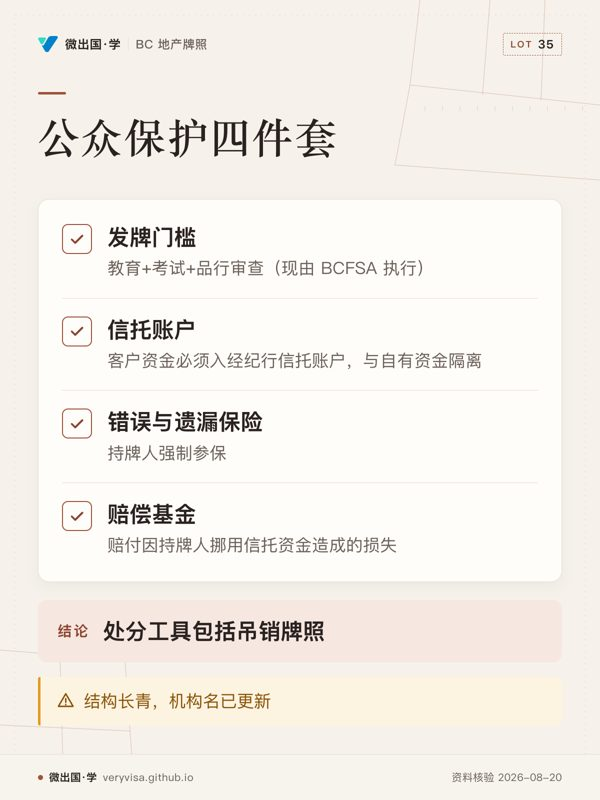

🃏 Flashcards · 3 闪卡 · 3 张 🖼 Slides · 2 幻灯 · 2 页 ✍️ Questions · 6 刷题 · 6 道
RESA 监管·职业责任·伦理 licensing-conduct P2 稳住 P2 Hold steady
ZH EN ZH + EN
先看这一章怎么考 First, how this chapter is tested
概念归属题：给出某项具体规定（如谁需要持牌、信托账户管理细则、楼花披露声明），考它属于 RESA、Real Estate Services Rules 还是 REDMA Statutory source questions: Given a specific provision (such as licensing requirements, trust account operating rules, or pre-sale disclosure statements), testing whether it falls under RESA, the Real Estate Services Rules, or REDMA. 机构职能题：考单一监管机构 BCFSA 的管辖范围，并用已解散的 RECBC、已并入的 OSRE 或其他保护机构（E&O、赔偿基金、地产基金会）做干扰项 Regulatory body questions: Testing the jurisdiction of the single regulator BCFSA, using the dissolved RECBC, the merged OSRE, or other protective bodies (E&O, Compensation Fund, Real Estate Foundation) as distractors. 牌照类别与级别题：给出具体执业场景，考属于三大牌照类别（Trading、Rental、Strata）中的哪一类，以及三个牌照级别与挂靠经纪行（Brokerage）的强制关系 Licence category and level questions: Given a specific practice scenario, testing which of the three licence categories (Trading, Rental, Strata) applies, and the mandatory requirement that all three licence levels must be engaged by a brokerage. 最常丢分的陷阱（看到题干信号就警觉） Traps that cost the most marks (watch for the signal in the stem)
旧机构名残留陷阱 Outdated entity name trap 题干问谁负责发牌、制定规则、调查投诉或执行纪律处分，选项同时出现 BCFSA、RECBC、OSRE The question stem asks who is responsible for licensing, rulemaking, investigating complaints, or imposing discipline, and the options list BCFSA alongside RECBC and OSRE. 四大保护机构张冠李戴 Mismatched public protection entities trap 题干出现「挪用信托资金（misappropriation of trust funds）」或「执业疏忽（errors and omissions）」或「公益与研究资助」 The question stem mentions misappropriation of trust funds, professional negligence (errors and omissions), or public interest and research funding. 考牌与申牌时间窗混淆 Exam and licensing timeline confusion trap 题干出现完成课程作业后多久内考试、挂科后隔多久重考、连续几次不及格重修、或通过考试后多久内申请牌照 The question stem mentions how long after finishing course assignments one must write the exam, the waiting period to rewrite after failing, how many consecutive failures require repeating the course, or the deadline to apply for a licence after passing. 本章考点页：导图、要点表、7 道带逐项解析的练习 →
考试版本与本站自测 ：本站 ©2020 存本用于章节结构与历史对照。UBC 已公开 2026 版目录，并要求学生跟进注册后的课程更新；正式考试按本人注册课程的现行考纲及官方更新准备。本站题目按题干注明的时期、法域与计算假设作答，八板块配比是自设练习配置，非 UBC 官方权重（UBC Sauder Real Estate Divis…（1 、2 ））。
本章地位 ：整个牌照体系的宪法章。考试口径（©2020）在这一章的伤最重——
它通篇讲的监管机构 RECBC 在 2021-08-01 已经解散。本篇按 2026 现行框架重建。
核实日期：2026-08-20 ，出处见文末源表。
一、三部法律，各管一段 本节回答 This section answers 区分 RESA、Rules 与 REDMA 各自管什么 Distinguish what RESA, the Rules, and REDMA each govern 本章考题 1 Question 1
图：三部法律，各管一段
BC 的地产执业监管由三层构成：
中文读者最容易踩的坑 ：网上大量中文资料仍引用「地产议会规则（Council Rules）」的旧条号。
2021-08-01 起 Rules 整体重编号（BCFSA 官网提供新旧条号对照表 Table of Concordance）；
引用条文时必须核对 BC Laws 上的现行版本，而不是任何 2021 年前的攻略。
节末检索小测 · 先别往回翻，凭记忆作答 Quick recall check: answer from memory before scrolling back
A newly licensed representative wants to verify the detailed operational requirements for maintaining brokerage trust accounts, making agency disclosures, and publishing compliant real estate advertisements. Which legal instrument directly sets out these practice rules?
一名新持牌的代表想核实维护经纪行信托账户、作出代理披露以及发布合规地产广告的具体操作细则。哪一部法律文件直接规定了这些执业规则？
a The Real Estate Development Marketing Act (REDMA) ✗ 属于法规分工混淆陷阱。地产开发营销法（Real Estate Development Marketing Act, REDMA）管的是开发商销售楼花或共管单位的披露义务与买家撤销权，不管日常经纪信托账户和广告细则。 Incorrect. This is a regulatory division of responsibilities trap. The Real Estate Development Marketing Act (REDMA) governs developer disclosure obligations and buyer rescission rights when marketing pre-sale development units or strata lots; it does not govern routine brokerage trust accounts or advertising rules.
b The Real Estate Services Rules (B.C. Reg. 209/2021) ✓ 正确。地产服务规则（Real Estate Services Rules，B.C. Reg. 209/2021）依 RESA s. 89.2 制定，专门规定披露、信托账户、广告、代理关系等具体执业行为细则。 Correct. The Real Estate Services Rules (B.C. Reg. 209/2021), enacted under RESA s. 89.2, specifically set out detailed operational practice rules governing disclosures, trust accounts, advertising, and agency relationships.
c The Finance Statutes Amendment Act, 2021 ✗ 属于立法背景混淆陷阱。2021 年金融成文法修正案（Finance Statutes Amendment Act, 2021）是将 RECBC 和 OSRE 并入 BCFSA 的组织立法依据，不包含日常执业细则。 Incorrect. This is a legislative background confusion trap. The Finance Statutes Amendment Act, 2021 served as the legislative authority to consolidate RECBC and OSRE into BCFSA; it does not contain day-to-day practice rules.
d The pre-2005 Real Estate Act of British Columbia ✗ 属于废止法律干扰项。旧的《地产法》（Real Estate Act）早在 2005 年初即被《地产服务法》（Real Estate Services Act, RESA）取代，不再有效。 Incorrect. This is a repealed statute distractor. The former Real Estate Act was replaced in early 2005 by the Real Estate Services Act (RESA) and is no longer in force.
看答案与每个选项的解析 Show the answer and why each option is right or wrong 答案 Answer ：b
二、监管者：BCFSA 一家，不再是三家 本节回答 This section answers 明确 BCFSA 唯一监管地位，替代旧机构 Clarify BCFSA's sole regulatory status replacing the former entities 本章考题 2 Question 2
2021-08-01 起，BC Financial Services Authority（BCFSA，BC 金融服务管理局）
成为全省金融服务的单一监管者，地产纳入其中。依《Finance Statutes Amendment Act, 2021》
（SBC 2021, c. 2），原来的两个机构并入 BCFSA：
Real Estate Council of BC（RECBC，地产议会） ——原来管发牌、教育、审计、投诉、纪律；已解散 ；Office of the Superintendent of Real Estate（OSRE，地产总监办公室） ——原来管规则制定与未持牌行为执法；已并入 。
这次合并的政策背景是 Cullen 反洗钱调查与「影子炒楼（shadow flipping）」丑闻后
对监管碎片化的批评。现在，从考牌、发牌、执业规则、投诉调查到纪律处分，全部只面对 BCFSA 一个机构 。
考试口径里 RECBC/OSRE 的职能描述可当历史背景读；涉及「向谁申请、向谁投诉、谁来处分」的每一处，
一律读成 BCFSA。
节末检索小测 · 先别往回翻，凭记忆作答 Quick recall check: answer from memory before scrolling back
Following the regulatory consolidation on August 1, 2021, which organization serves as the single regulator responsible for licensing, rulemaking, investigating complaints, and disciplining real estate licensees in British Columbia?
自 2021 年 8 月 1 日监管整合后，哪一个机构作为单一监管者，统一负责 BC 省地产持牌人的发牌、规则制定、投诉调查与纪律处分？
a The Real Estate Council of British Columbia (RECBC) ✗ 属于旧机构名残留陷阱。BC 地产议会（Real Estate Council of BC, RECBC）已于 2021-08-01 解散（虽然 ©2020 旧考试资料中仍出现该名称，现行框架已统一归入 BCFSA）。 Incorrect. This is an outdated entity name trap. The Real Estate Council of British Columbia (RECBC) was dissolved on August 1, 2021. Although the name still appears in pre-2021 course materials, regulatory responsibilities have been unified under BCFSA.
b The Office of the Superintendent of Real Estate (OSRE) ✗ 属于旧机构名残留陷阱。地产总监办公室（Office of the Superintendent of Real Estate, OSRE）已于 2021-08-01 并入 BCFSA，不再作为独立办公室存在。 Incorrect. This is an outdated entity name trap. The Office of the Superintendent of Real Estate (OSRE) was integrated into BCFSA on August 1, 2021, and no longer exists as an independent office.
c The BC Financial Services Authority (BCFSA) ✓ 正确。自 2021-08-01 起，BC 金融服务管理局（BC Financial Services Authority, BCFSA）成为全省单一监管机构，统管考牌、发牌、执业规则、投诉调查与纪律处分（旧考试资料中的 RECBC/OSRE 在现行规则下一律对应 BCFSA）。 Correct. Effective August 1, 2021, the BC Financial Services Authority (BCFSA) became the province's single regulator, overseeing examination standards, licensing, practice rules, complaint investigations, and discipline (references to RECBC or OSRE in older exam materials correspond to BCFSA under the current framework).
d The Real Estate Foundation of British Columbia ✗ 属于四大保护机构张冠李戴陷阱。BC 地产基金会（Real Estate Foundation of BC）负责研究与公益资助，不负责发牌或纪律监管。 Incorrect. This is a mismatched public protection entities trap. The Real Estate Foundation of British Columbia funds real estate research and public interest initiatives; it does not handle licensing or disciplinary regulation.
看答案与每个选项的解析 Show the answer and why each option is right or wrong 答案 Answer ：c
三、牌照体系（现行） 本节回答 This section answers 区分三类牌照、三个级别，以及考牌英语与时限要求 Distinguish the three licence categories, three levels, English requirements, and licensing deadlines 本章考题 3 Question 3
RESA 把「需要牌照的地产服务」分三类（类别 category ）：
Trading Services（交易服务） ——买卖代理，本课主线；Rental Property Management Services（出租物业管理服务） ；Strata Management Services（共管物业管理服务） 。
每类之内再分级别（level） ：representative（代表）→ associate broker（副经纪）→
managing broker（管理经纪）。每个持牌人必须挂靠在一家持牌 brokerage（经纪行）之下执业。
考牌路径（Trading Services，2026 现行）
节末检索小测 · 先别往回翻，凭记忆作答 Quick recall check: answer from memory before scrolling back
An applicant who does not hold a recognized degree taught primarily in English and has never been licensed in another Canadian jurisdiction wishes to register for the Real Estate Trading Services Licensing Examination. How must this applicant satisfy the English Language Proficiency Requirement (ELPR)?
一名申请人没有以英语为主要教学语言的认可院校学位，也从未在加拿大其他省区持过地产牌照，现拟报名参加地产交易服务牌照考试。该申请人必须如何满足英语能力要求（ELPR）？
a Score at least level 7 in each of reading, writing, listening and speaking on CELPIP-General before the exam. ✓ 正确。根据地产服务规则（Real Estate Services Rules s. 7），参加牌照考试前必须满足英语能力要求（ELPR）：在 CELPIP-General 考试中听说读写四项各达 7 级或以上。 Correct. Under section 7 of the Real Estate Services Rules, candidates must satisfy the English Language Proficiency Requirement (ELPR) prior to writing the licensing exam by achieving at least Level 7 in each of reading, writing, listening, and speaking on the CELPIP-General test.
b Achieve an overall band score of 7.0 on the IELTS Academic test within one year after passing the licensing examination. ✗ 属于考牌规则与时间窗混淆陷阱。首先现行规则未列 IELTS（只认 CELPIP-General），其次英语能力要求必须在参加牌照考试之前满足，而非通过考试之后。 Incorrect. This is an exam rules and timeline confusion trap. First, current rules do not list IELTS (only CELPIP-General is recognized for testing); second, the English requirement must be satisfied before writing the exam, not after passing it.
c Complete Parts 1 and 2 of the Applied Practice Course before registering for the licensing examination. ✗ 属于考牌流程顺序混淆陷阱。实务课程（Applied Practice Course）第 1、2 部分是在申请牌照前完成，并不能替代考前的英语能力要求（ELPR）。 Incorrect. This is a licensing process sequence confusion trap. Parts 1 and 2 of the Applied Practice Course are completed prior to licence application and do not substitute for the pre-exam English Language Proficiency Requirement.
d Obtain a sponsorship letter from a managing broker certifying fluency within 90 days of licence application. ✗ 属于自造豁免条件陷阱。管理经纪（managing broker）担保不能豁免 ELPR，规则仅认可 CELPIP-General 四项 7 级、英语教学认可院校学士及以上学位或设有英语要求的他省地产牌照。 Incorrect. This is a fabricated exemption condition trap. A managing broker's sponsorship letter cannot waive the ELPR. Rules only recognize CELPIP-General Level 7 across all four components, a bachelor's degree or higher from an English-instruction institution, or a licensed real estate credential from another Canadian jurisdiction with an English requirement.
看答案与每个选项的解析 Show the answer and why each option is right or wrong 答案 Answer ：a
四、公众保护的四件套（结构长青，机构名已更新） 本节回答 This section answers 识别门槛、信托账户、E&O 保险与赔偿基金各自保护什么 Identify what suitability screening, trust accounts, E&O insurance, and the Compensation Fund each protect 本章考题 4 Question 4
考试口径列的保护机制框架仍然成立，但要用现行机构名对读：
发牌门槛 ：教育+考试+品行审查（现由 BCFSA 执行）；信托账户（trust accounts） ：客户资金必须入经纪行信托账户，与经纪行自有资金隔离，
细则在现行 Rules（B.C. Reg. 209/2021）的信托条款；错误与遗漏保险 ：Real Estate Errors and Omissions Insurance Corporation（E&O 保险公司）仍然存在，持牌人强制参保；赔偿基金 ：Real Estate Compensation Fund Corporation，赔付因持牌人挪用信托资金造成的损失。
另外两个考试口径提到的机构现状：Real Estate Foundation of BC 照常运作（研究与公益资助）；
「Superintendent of Real Estate」作为独立办公室已不存在，其职权在 BCFSA 内部行使。
节末检索小测 · 先别往回翻，凭记忆作答 Quick recall check: answer from memory before scrolling back
Which entity is specifically responsible for providing mandatory professional liability coverage to protect real estate licensees against claims arising from negligent acts or mistakes in practice?
哪一个机构专门负责提供强制性职业责任保障，以保护地产持牌人应对因执业疏忽或失误引发的索赔？
a The Real Estate Compensation Fund Corporation ✗ 属于四大保护机构张冠李戴陷阱。地产赔偿基金公司（Real Estate Compensation Fund Corporation）赔付的是因持牌人挪用信托资金（misappropriation of trust funds）造成的损失，而非执业疏忽。 Incorrect. This is a mismatched public protection entities trap. The Real Estate Compensation Fund Corporation compensates for losses caused by a licensee's misappropriation of trust funds, not professional negligence.
b The Real Estate Foundation of British Columbia ✗ 属于四大保护机构张冠李戴陷阱。BC 地产基金会（Real Estate Foundation of BC）负责地产相关研究与公益资助，不提供职业责任保险。 Incorrect. This is a mismatched public protection entities trap. The mandate of the Real Estate Foundation of British Columbia is real estate research and public interest funding; it does not provide professional liability insurance.
c The Real Estate Errors and Omissions Insurance Corporation ✓ 正确。地产错误与遗漏保险公司（Real Estate Errors and Omissions Insurance Corporation，简称 E&O 保险公司）仍然存在，所有持牌人必须强制参保以应对执业疏忽索赔。 Correct. The Real Estate Errors and Omissions Insurance Corporation (E&O Insurance Corporation) continues to operate, and all licensees are mandated to maintain coverage against claims arising from negligent acts or omissions in practice.
d The Office of the Superintendent of Real Estate ✗ 属于旧机构名残留陷阱。地产总监办公室（OSRE）作为独立办公室已不存在，其原规则制定与执法职权已并入 BCFSA，且从来不是保险机构。 Incorrect. This is an outdated entity name trap. The Office of the Superintendent of Real Estate (OSRE) no longer exists as an independent entity; its regulatory and enforcement powers were integrated into BCFSA, and it was never an insurance corporation.
看答案与每个选项的解析 Show the answer and why each option is right or wrong 答案 Answer ：c
五、违规后果（现行框架） 本节回答 This section answers 掌握 BCFSA 处分工具与纪律罚款、行政罚款的法定上限 Master BCFSA disciplinary tools and statutory maximums for disciplinary and administrative penalties
投诉、调查、听证、处分全链条由 BCFSA 执行。处分工具包括：谴责、附条件、暂停、吊销牌照，
以及纪律罚款与行政罚款。考试口径里的金额已经过时，现行上限在 RESA 里写得很清楚：
纪律罚款 每次违规个人最高 $250,000、经纪行最高 $500,000，且可就每一次违规分别科处，另可追缴该次违规所收报酬
（s. 43(2)(i)(j)、s. 43(2.1)）；行政罚款 单笔法定上限 $100,000（s. 56(2)），具体按规则 s. 26–27 的 A–F 六档定价，
细节见本课第 5 讲。
节末检索小测 · 先别往回翻，凭记忆作答 Quick recall check: answer from memory before scrolling back
Under the current provisions of the Real Estate Services Act, what is the statutory maximum administrative penalty that the BC Financial Services Authority (BCFSA) may impose?
根据《地产服务法》（RESA）的现行规定，BC 金融服务管理局（BCFSA）可科处的单笔行政罚款（administrative penalty）法定最高上限是多少？
a $250,000 ✗ 属于纪律罚款与行政罚款混同陷阱。$250,000 是针对个人持牌人（individual licensee）每次违规的纪律罚款（disciplinary penalty）最高上限，不是行政罚款上限。 Incorrect. This is a disciplinary penalty and administrative penalty conflation trap. The amount of $250,000 is the statutory maximum disciplinary penalty per contravention for an individual licensee, not an administrative penalty limit.
b $500,000 ✗ 属于纪律罚款与行政罚款混同陷阱。$500,000 是针对经纪行（brokerage）每次违规的纪律罚款（disciplinary penalty）最高上限，不是行政罚款上限。 Incorrect. This is a disciplinary penalty and administrative penalty conflation trap. The amount of $500,000 is the statutory maximum disciplinary penalty per contravention for a brokerage, not an administrative penalty limit.
c $100,000 ✓ 正确。根据现行 RESA s. 56(2)，行政罚款（administrative penalty）单笔法定上限为 $100,000（具体按规则 s. 26–27 的 A–F 六档定价；旧版考试资料中的过时金额已不再适用）。 Correct. Under section 56(2) of RESA, the statutory maximum for a single administrative penalty is $100,000 (prescribed according to categories A through F under Rules ss. 26–27; outdated lower amounts from older exam editions no longer apply).
d There is no statutory limit if the licensee also forfeits remuneration. ✗ 属于法条细节捏造陷阱。虽然纪律处分中可另行追缴该次违规所收报酬，但行政罚款和纪律罚款在 RESA 中均有明确的法定金额上限。 Incorrect. This is a fabricated statutory detail trap. While disciplinary orders may separately require forfeiture of remuneration earned from a contravention, both administrative penalties and disciplinary fines have explicit statutory caps under RESA.
看答案与每个选项的解析 Show the answer and why each option is right or wrong 答案 Answer ：c
六、REDMA 一页通 本节回答 This section answers 掌握 REDMA 披露与 7 天撤销权，区分冷静期 Master REDMA disclosure requirements and the 7-day rescission right, distinguishing it from the cooling-off period 本章考题 5 Question 5
开发商向公众销售开发单位 （strata lots、合作社份额、分时度假、共有权益等）时，
必须先备案并向买家提供披露声明（disclosure statement） ；买家享有法定撤销权（rescission rights）：
从签订购买协议、与开发商取得买家「已有机会阅读披露声明」书面确认这两天中较晚的一天起 7 天内 ，可书面通知开发商撤销（REDMA s. 21(2)）。
REDMA 的撤销权与 2023-01-03 起生效的住宅买家冷静期（Home Buyer Rescission Period，3 个工作日、撤销须付买价 0.25%）是两套制度 ，
后者属转售交易、在 ch11/ch24 展开——考试与实务都不要混淆。
节末检索小测 · 先别往回翻，凭记忆作答 Quick recall check: answer from memory before scrolling back
How does the rescission right under the Real Estate Development Marketing Act (REDMA) differ from the Home Buyer Rescission Period (HBRP) that took effect on January 3, 2023?
《地产开发营销法》（REDMA）下的撤销权与 2023 年 1 月 3 日生效的住宅买家冷静期（HBRP）有何区别？
a REDMA grants a 3-business-day rescission period subject to a 0.25% fee, whereas the HBRP grants a 7-day period with no fee. ✗ 属于 REDMA 与 HBRP 撤销权混淆陷阱。该选项把两套制度的期限和费用完全颠倒了：3 个工作日及 0.25% 撤销费属于 HBRP，7 天属于 REDMA。 Incorrect. This is a REDMA and HBRP rescission rights confusion trap. This option completely reverses the time limits and fees of the two regimes: 3 business days and the 0.25% fee belong to HBRP, while 7 days belongs to REDMA.
b REDMA gives 7 days for developer-marketed units, while the HBRP gives 3 business days with a 0.25% fee on resale homes. ✓ 正确。REDMA 针对开发商销售的开发单位提供 7 天法定撤销权（s. 21(2)）；而住宅买家冷静期（Home Buyer Rescission Period, HBRP）适用于转售交易，期限为 3 个工作日且撤销须支付买价的 0.25%。 Correct. Under section 21(2) of REDMA, buyers of developer-marketed development units receive a 7-day statutory rescission right; conversely, the Home Buyer Rescission Period (HBRP) applies to residential resale transactions, provides 3 business days, and requires paying a 0.25% rescission fee.
c REDMA applies only after a buyer has occupied a strata unit for 90 days, whereas the HBRP applies before contract signing. ✗ 属于时间窗张冠李戴陷阱。90 天是牌照考试不及格重考的最短等待期，与 REDMA 撤销权或 HBRP 毫无关系。 Incorrect. This is a mismatched time limits trap. The 90-day period is the minimum waiting time to rewrite an exam after a failure; it has no relation to REDMA rescission rights or HBRP.
d REDMA rescission notices must be filed with the Real Estate Compensation Fund Corporation, whereas HBRP notices go to the developer. ✗ 属于通知对象与机构混淆陷阱。REDMA 撤销权是由买家书面通知开发商（developer），与赔偿基金公司无关。 Incorrect. This is a notice recipient and institution confusion trap. Under REDMA, the buyer gives written notice of rescission directly to the developer, not to the Real Estate Compensation Fund Corporation.
看答案与每个选项的解析 Show the answer and why each option is right or wrong 答案 Answer ：b
延伸阅读
论坛全文：BC《地产服务法》讲解：RESA、BCFSA 与三类牌照，2021 年换过的规则别再背旧的
源表（本篇判据）
| 7 | 纪律罚款上限 $250,000/$500,000、可按每次违规科处（s.43(2)(i)、(2.1)）；行政罚款上限 $100,000（s.56(2)） | bclaws.gov.bc.ca/civix/document/id/complete/statreg/04042_01（current to 2026-10-27） | 2026-10-30 |
| 8 | 申请牌照须在通过考试后 1 年内；实务课程第 1、2 部分须在申请前完成；19 岁；英语标准只认 CELPIP-General 或学历/他省牌照 | bcfsa.ca/industry-resources/real-estate-professional-resources/education-and-licensing/education-licensing-policies/education-licensing-guidelines | 2026-10-30 |
| 9 | REDMA 撤销期 7 天（s.21(2)）；住宅买家冷静期 3 个工作日、0.25%、2023-01-03 起（B.C. Reg. 175/2022 s.4、s.6） | bclaws.gov.bc.ca/civix/document/id/complete/statreg/04041_01；…/statreg/175_2022 | 2026-10-30 |
本篇有意没给的数字 （没读到官方原文，以官方现行页为准）：课程学费现价；课程注册后完成作业的期限与无犯罪记录核查的时间窗（UBC 与 BCFSA 现行页未直读到原文）。
本页知识卡 不看正文也能拿到这一节的核心内容：先看导读，再看图。点图放大，左右翻页。
放大 ⤢ 三层文件各管一类事，先分清再答题。 先看 先看左列各自处理哪类问题，别把三个文件混在一起。易漏 执行一栏只写了 BCFSA；另外两层由谁执行，去讲义里看。下一步 去讲义核对每一层的现行版本与执行主体。详情与分享 → 
放大 ⤢ 四项保护机制仍成立，但机构名称要按现行口径读。 先看 先区分事前约束和损失补偿，四项机制不是一类作用。易漏 机构变化不等于框架消失；独立办公室已不存在。下一步 去练习把保护机制和处分后果分开归类。详情与分享 → 本站依据官方原文自撰 · 出处见正文链接